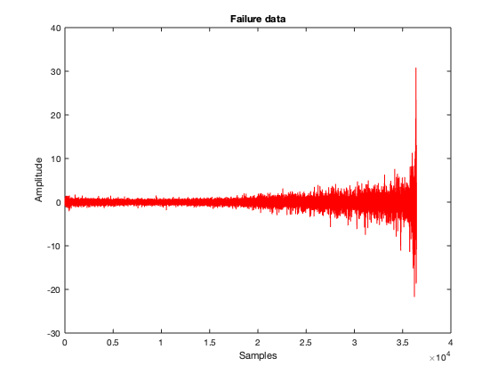
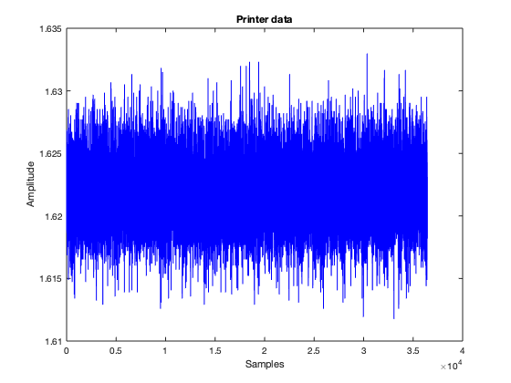
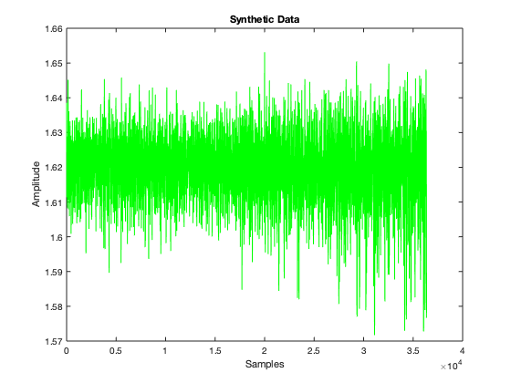

PSDsynth
Generates a synthetic failure on a non-failure vibrational dataset by leveraging the variations in the PSD (Power Spectral Density) of a failure dataset.
Contents
- Load bearing data
- Trim data so only values are present
- Trim printer data S to match length of failure data X, takes from middle
- Choose parameters for algorithm
- Take the Fast Fourier Transform of each window in the failure data and calculate it's power
- Take the Fast Fourier Transform of each window in the printer data
- Calculate the power density for each bin in each XFFTPow window for the failure data
- Get normalized multiplicative terms for each bin in each window in binXFFTpow
- Apply normalized multiplicative diff terms to each corresponding frequency in S
- Synthesize new signal by taking inverse fourier transform at each window and build up new signal
Load bearing data
XTable = readtable('bearing_failure_data.csv'); STable = readtable('printer_bearing_data.csv');
Trim data so only values are present
X = XTable.value; S = STable.value;
Trim printer data S to match length of failure data X, takes from middle
Lx = length(X); STrim = S(floor(length(S)/2):floor(length(S)/2)+Lx); figure(1); plot(X, 'r'); title('Failure data'); pos1 = get(gcf,'Position'); set(gcf,'Position', pos1 - [300,0,0,0]); xlabel('Samples'); ylabel('Amplitude'); figure(2); plot(STrim, 'b'); title('Printer data'); set(gcf,'Position', get(gcf,'Position') + [0,0,0,0]); pos2 = get(gcf,'Position'); set(gcf,'Position', pos2 + [pos1(3)/2,0,0,0]); xlabel('Samples'); ylabel('Amplitude'); 
Choose parameters for algorithm
windowsize = 40; stepsize = 1; numbins = 2; samplerate = 130;
Take the Fast Fourier Transform of each window in the failure data and calculate it's power
XFFTwindpow = zeros(windowsize,1)*(1:floor((Lx-windowsize)/stepsize)); for i = stepsize:stepsize:Lx-windowsize XFFTwindpow(:, i/stepsize) = (((abs(fft(X((1+i-stepsize):(1+i-stepsize)+windowsize-1)))).^2) * (1/(samplerate*windowsize))); end x = linspace(0, pi, (windowsize)/2); xv = linspace(0, pi, 10*(windowsize)); y = XFFTwindpow((1:windowsize/2)+1,1); inter = interp1(x, y, xv, 'spline'); plot(xv, inter, 'm'); y2 = XFFTwindpow((1:windowsize/2)+1, 2); inter2 = interp1(x, y2, xv, 'spline'); hold on; plot(xv, inter2, 'r'); hold off; set(gca, 'XTick', 0:pi/4:pi); set(gca, 'XTickLabel', {'0', '\pi/4', '\pi/2', '3\pi/4', '\pi'}); title('Power of frequencies in failure windows'); xlabel('Normalized Frequency (x rad/sample)'); ylabel('Power'); legend('window 1', 'window 2');

Take the Fast Fourier Transform of each window in the printer data
SFFTwind = zeros(windowsize,1)*(1:floor((Lx-windowsize)/stepsize)); for i = stepsize:stepsize:Lx-windowsize SFFTwind(:, i/stepsize) = fft(STrim((1+i-stepsize):(1+i-stepsize)+windowsize-1)); end xb = linspace(0, pi, windowsize/2); yb = real(SFFTwind((1:windowsize/2)+1,1));
Calculate the power density for each bin in each XFFTPow window for the failure data
binXFFTpow = zeros(numbins,1)*(1:floor((Lx-(windowsize))/stepsize)); bincols = zeros(numbins, 1); binsize = floor(windowsize/numbins); x = 1:windowsize; for i = 1:floor((Lx-windowsize)/stepsize) y = XFFTwindpow(:, i); for j = 1:numbins int = cumtrapz(y); intv = @(a, b) max(int (x<= b))- min(int (x>=a)); bincols(j) = intv((1+(j-1)*binsize), (j*binsize)); end binXFFTpow(:, i) = bincols; end
Get normalized multiplicative terms for each bin in each window in binXFFTpow
shiftedbins = cat(2, zeros(size(binXFFTpow,1),1), binXFFTpow); shiftedbins = shiftedbins(:, 1:end-1); bindiff = binXFFTpow(:,1:end) - shiftedbins; normalizeddiff = sqrt((bindiff + real(binXFFTpow)) ./ real(binXFFTpow));
Apply normalized multiplicative diff terms to each corresponding frequency in S
YFFTwind = zeros(windowsize,1)*(1:floor((Lx-windowsize)/stepsize)); for i = 1:floor((Lx-windowsize)/stepsize) for j = 1:numbins YFFTwind(1+((j-1)*binsize):(j*binsize), i) = SFFTwind(1+((j-1)*binsize):(j*binsize), i) .* normalizeddiff(j,i); end end xa = linspace(0, pi, (windowsize/2)); ya = real(YFFTwind((1:windowsize/2)+1,1)); inter1 = interp1(xb, yb, xv, 'spline'); inter2 = interp1(xa, ya, xv, 'spline'); plot(xv, inter1, 'b'); hold on; plot(xv, inter2, 'g'); hold off; set(gca, 'XTick', 0:pi/4:pi); set(gca, 'XTickLabel', {'0', '\pi/4', '\pi/2', '3\pi/4', '\pi'}); title('Frequency domain of printer data'); xlabel('Normalized Frequency (x rad/sample)'); ylabel('Amplitude') legend('original window 1', 'synthetic window 1');

Synthesize new signal by taking inverse fourier transform at each window and build up new signal
Y = zeros(Lx, 1); J = zeros(Lx, 1); for i = stepsize:stepsize:Lx-windowsize x = ifft(YFFTwind(:, i/stepsize)); J((1+i-stepsize):(1+i-stepsize)+windowsize-1) = x; Y = Y + (J./windowsize) .* stepsize; J((1+i-stepsize):(1+i-stepsize)+windowsize-1) = 0; end values = real(Y(windowsize:end-windowsize)); figure(1); plot(values, 'g'); title("Synthetic Data"); pos1 = get(gcf,'Position'); set(gcf,'Position', pos1 - [300,0,0,0]) xlabel('Samples'); ylabel('Amplitude'); figure(2); plot(STrim, 'b'); title("Original Printer data"); set(gcf,'Position', get(gcf,'Position') + [0,0,0,0]); pos2 = get(gcf,'Position'); set(gcf,'Position', pos2 + [pos1(3)/2,0,0,0]); xlabel('Samples'); ylabel('Amplitude');